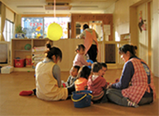

地域から求人を探す
>勤務地（エリア）
変更する
【選択された項目】新宿区,品川区
新宿区,品川区
>職種
変更する
【選択された項目】保育士,幼稚園教諭,栄養士・調理師
保育士,幼稚園教諭
>施設形態
変更する
【選択された項目】正社員,パート・アルバイト,契約社員
正社員,パート・アルバイト,契約社員
>勤務形態
変更する
【選択された項目】アットホーム、小規模園,のびのび保育
アットホーム、小規模園,のびのび保育
>こだわり条件
変更する
【選択された項目】院内保育,託児所
院内保育,託児所
この条件の求人は2件ありました。▼この条件で検索する
検索結果2件
2件中 1～2件を表示
今回の検索条件：港区（２）
オススメ!自転車通勤OK！午後からの短時間パートさん募集♪17時以・・・
最寄駅から徒歩5分、雨の日の通勤もラクラクな保育園です★園児30名程度の保育園なので、とってもアットホームな雰囲気です♪大学の職員のお子様をお預かりしている保育室で保育業務・・・

！お気に入りに追加済み
| 勤務地 | あおぞら保育園 / 東京都練馬区東大泉1-35-14 貫井ビルディング3F |
|---|---|
| 雇用形態 | パート |
| 職種 | 保育士 |
| 勤務時間 | 8:00～17:00 |
| 給与 | 月給186,000円～250,000円 ※保育士経験加算あり |
オススメ!自転車通勤OK！午後からの短時間パートさん募集♪17時以・・・
最寄駅から徒歩5分、雨の日の通勤もラクラクな保育園です★園児30名程度の保育園なので、とってもアットホームな雰囲気です♪大学の職員のお子様をお預かりしている保育室で保育業務・・・
| 勤務地 | あおぞら保育園 / 東京都練馬区東大泉1-35-14 貫井ビルディング3F |
|---|---|
| 雇用形態 | パート |
| 職種 | 保育士 |
| 勤務時間 | 8:00～17:00 |
| 給与 | 月給186,000円～250,000円 ※保育士経験加算あり |
2件中 1～2件を表示
今回の検索条件：港区（２）
▽あなたにオススメの求人